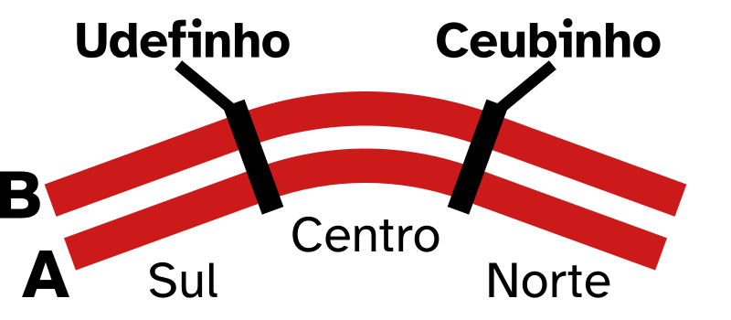
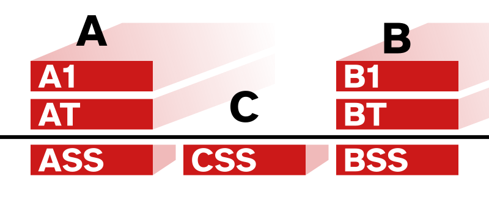
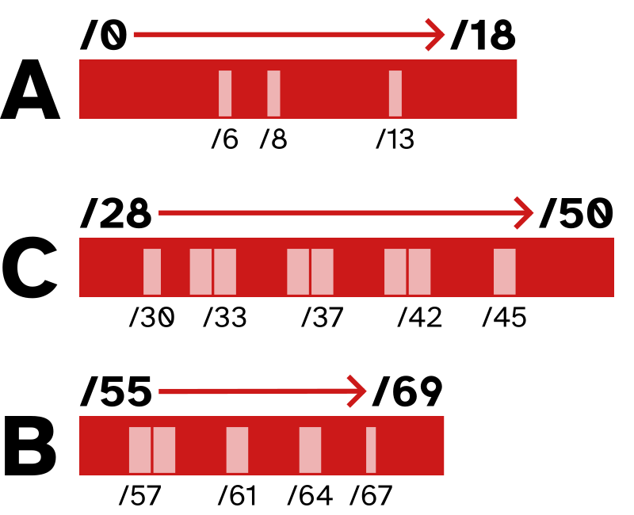

O Instituto Central de Ciências (ICC), ou o Minhocão, é o maior prédio do campus Darcy Ribeiro, quase 700 metros de comprimento. Ele possui 2 blocos, A e B (além de um bloco C apenas no subsolo), e possuem a parte central curvada e pontas retas Sul e Norte. Essas partes são separadas por passarelas que conectam os blocos e são abertos ao exterior. A passarela entre a seção Sul e o Centro é o Udefinho e a entre o Norte e o Centro é o Ceubinho. Nessas passarelas há lanchonetes, bancas e outras lojas, além de bancadas que podem te ajudar a se localizar.
O ICC também tem 3 andares: o Térreo (AT, BT), o 1º Andar (A1, B1) e o Subsolo (ASS, BSS, CSS).
O ICC, sendo o Instituto Central, tem salas dedicadas a várias faculdades e institutos, como Matemática, Agronomia, Arquitetura e Física, além de anfiteatros no bloco B. Há escadas periodicamente nos 2 blocos que levam a outros andares, geralmente acompanhados de banheiros e entradas para as salas no interior do ICC.
Há também 1 elevador acessível em cada seção do bloco B, alguns no bloco A, e plataformas inclinadas no Norte e Sul do bloco A.
Se localizando
Os números de coordenadas nas portas indicam posição ao longo do comprimento do minhocão, aumentando do 000 na ponta sul ao 690 na ponta norte.
Você pode ver a sua coordenada atual em placas no teto, visíveis do térreo e do 1º andar. No subsolo podem ser vistas por números pintados na parede ou por placas também. Essas placas e números aumentam de três em três (000, 003, 006, 009...), e são instaladas nos grandes pilares de sustentação. Entre cada um desses pilares há 3 janelas/portas, aumentando o número de um em um.
Quando são dentro de corredores, as portas são seguidas de uma barra e 2 números, que aumentam com a profundidade do minhocão, indo da ponta do bloco A (/00), pelo bloco C e até a ponta do bloco B (/70), mas essas coordenadas secundárias não são marcadas por placas como os números de 3 dígitos, então é preciso olhar para as placas das portas para se localizar.
